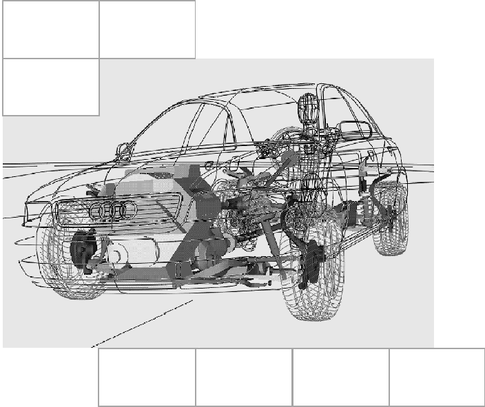

[redacted]
[redacted-phone]
[redacted-phone]
[redacted-person] / OE
Hausruf [redacted-phone]
Telefax [redacted]
[redacted-co]

D[redacted][redacted]LAH.DUM.880.FM
Verteiler
|
[redacted-person] | [redacted-person] |
|
[redacted-person] | [redacted-person] |
Abstimmung
|
[redacted-person] | [redacted-person] |
|
[redacted-person] | [redacted-person] |
Änderungsdokumentation
|
|
|
|---|---|---|
| [redacted-person] |
|
[redacted-person] |
Inhaltsverzeichnis
Kurzbeschreibung des Entwicklungsumfangs 6Allgemeines 6Seiten- und Kopf-Thorax-Airbag 7Modellaufbau 7Entfaltungssimulationen 7[redacted-person] 7Weitergabe von Modellen 8Schlitten- und Gesamtfahrzeugversuche 8Kopfairbag 9Modellaufbau 9Entfaltungssimulationen 9[redacted-person] 9Weitergabe von Modellen 10Gesamtfahrzeugversuche 10[redacted-person] 11Modellierung 12Dokumentation und Datenaustausch 13[redacted-person] 14
Lastenhefte zur Info 14
[redacted-person] / Normen 14
[redacted-person] von Unfallfolgen werden im [redacted-person]-, Kopf-Thorax- und Kopfairbags eingesetzt. [redacted-person] der Komponenten sollen in einen Gesamtprozess eingebettet Simulationen durchgeführt werden.
[redacted-person] der Seiten-, Kopf-Thorax- und Kopfairbags werden vom Bauteillieferanten zur Verfügung gestellt. [redacted-person] der Airbagkomponenten und die Anforderungen an den Bauteillieferanten können
LAH.DUM.880.EM [redacted]LAH.DUM.880.FB [redacted-person] Komponente
VW82036 VW-[redacted-person] Airbag
entnommen werden.
Die vom Bauteillieferanten nach Lastenheft zur Verfügung gestellten Simulationsmodelle sind auf ihre Qualität und die Erfüllung der Lastenhefte zu kontrollieren.
Alle geforderten Untersuchungen sind nur bei Raumtemperatur durchzuführen. [redacted-person] gilt für Serien- sowie Mehrausstattungen gleichermaßen.
Durch den [redacted-person] beziehungsweise durch die [redacted-co]-Fachabteilung werden Basismodelle aller [redacted-person] vorne und hinten zur Verfügung gestellt. In diesen Modellen sind alle Komponenten, die die Entfaltung und Positionierung des Seiten- beziehungsweise Kopf- Thorax-Airbags beeinflussen könnten zu integrieren. Falls diese schon modelliert sind, so ist die Modellierung zu prüfen und falls notwendig anzupassen. Insbesondere sind dies:
Reißnaht
Innensack
Schäume
Bezüge
Details (Geometrie [insbesondere Lose des Bezug & des Innensacks], Materialien, Steifigkeiten, …) zu diesen Bauteilen sind mit dem [redacted-person] abzustimmen. Dabei sind auch alle relevanten Sonderausstattungen (Lehnenbreitenverstellung, Sitzheizungen, Massagefunktionen, …) zu betrachten.
Falls notwendig, ist eine Montagesimulation des Airbags in den Innensack durchzuführen.
[redacted-person], die im weiteren Verlauf auf die erstellten Modelle zugreifen müssen, spezielle Anforderungen an die Modelle haben, so sind diese falls möglich zu beachten.
[redacted-person] der Modellqualität sind zum Abschluss des [redacted-person] ohne Generatorzündung durchzuführen. [redacted-person] sind auf Energiebilanz und Intersections/Penetrations zu prüfen. Falls erforderlich sind die Modelle entsprechend zu optimieren.
Mit dem aufgebauten Modell sind Entfaltungssimulationen durchzuführen. Ziel ist es, eine möglichst schnelle und reproduzierbare Positionierung des Airbags zu erreichen. Falls sich daraus Anforderungen an die Hardware ergeben, so sind diese mit der zuständigen [redacted-co]-Fachabteilung und dem Bauteillieferanten zu diskutieren. Dazu kann es erforderlich sein unter anderem die folgenden Punkte zu untersuchen:
[redacted-person] (Geometrie, Material)
[redacted-person]
[redacted-person]
Interaktion mit Störkonturen
Dabei ist auch die Interaktion mit der Umgebung zu betrachten. Dies beinhaltet insbesondere die Integrität von Verkleidungsteilen und die Belastung von Kindersitzen.
Während der Entwicklung werden vom Bauteillieferanten beziehungsweise dem [redacted]aus Sitz durchgeführt. Die relevanten Versuche sind zur Validierung der Entfaltung und Positionierung des Airbags zu verwenden. Die entsprechenden Versuchsumgebungen sind zu modellieren. Wenn für diese Aufgabe zusätzliche Messtechnik oder Dokumentationen notwendig sind, so ist dies entsprechend mit der zuständigen [redacted-co]-Fachabteilung und dem Bauteillieferanten abzustimmen.
Bei der Validierung sind insbesondere folgende Punkte zu beachten und falls erforderlich ins Modell einzubringen:
Zeitpunkt des Öffnen der einzelnen Abschnitte der Reißnaht
Schaumeinreißen
Verformungen von Blenden und Lehnenabdeckung
Brechen von Teilen (Blenden, Lehnenbreitenverstellung, …)
Die erstellten und validierten Modelle sind an den [redacted-person] und den [redacted-person] zur Betrachtung in dynamischer Umgebung weiterzugeben. [redacted-person] sind nicht zu verschlüsseln.
[redacted-person] Airbag hat eine Mitverantwortung für die Validierung der Entfaltung und Positionierung bezüglich des Airbags. Dafür müssen die entsprechenden Sitzmodelle dem Lieferanten zur Verfügung gestellt werden. [redacted-person] sind zu verschlüsseln.
Falls es in Schlitten- und Gesamtfahrzeugversuchen zu Entfaltungs- und/oder Positionierungsproblemen aufgrund der [redacted-person] in Sitz kommt, so ist durch entsprechende Simulationen in Abstimmung mit dem [redacted-person] eine Analyse der Einflussparameter durchzuführen. Weiterhin sind in Abstimmung mit dem [redacted-person] zu entwickeln.
Durch den [redacted-person] werden [redacted-person] zur Verfügung gestellt. In diesen Modellen sind alle Komponenten, die die Entfaltung und Positionierung des Kopfairbags beeinflussen könnten zu integrieren. Falls diese schon modelliert sind, so ist die Modellierung zu prüfen und falls notwendig anzupassen. Insbesondere sind dies:
[redacted-person]
Kabel und Wasserabläufe
Dichtungen
FMVSS201 Maßnahmen
Details (Geometrie, Materialien, Steifigkeiten, …) zu diesen Bauteilen sind mit dem [redacted-person] abzustimmen. Dabei sind alle Dachvarianten (Normal-, Schiebe- und Panoramadach) sowie relevanten Sonderausstattungen (zum [redacted-person], Beleuchtung, …) zu betrachten. Falls notwendig ist eine Montagesimulation des Airbags in das Greenhouse durchzuführen.
[redacted-person], die im weiteren Verlauf auf die erstellten Modelle zugreifen müssen, spezielle Anforderungen an die Modelle haben, so sind diese falls möglich zu beachten.
[redacted-person] der Modellqualität sind zum Abschluss des [redacted-person] ohne Generatorzündung durchzuführen. [redacted-person] sind auf Energiebilanz und Intersections/Penetrations zu prüfen. Falls erforderlich sind die Modelle entsprechend zu optimieren.
Mit dem aufgebauten Modell sind Entfaltungssimulationen durchzuführen. Ziel ist es, eine möglichst schnelle und reproduzierbare Positionierung des Airbags zu erreichen. Dabei sind fliegende und brechende Teile zu vermeiden. Dazu kann es erforderlich sein, unter anderem die folgenden Punkte zu untersuchen:
Rampe und Splitlines
[redacted-person]
[redacted-person]
Dabei ist auch die Interaktion mit der Umgebung zu betrachten. Dies beinhaltet insbesondere die Integrität von Verkleidungsteilen und die Belastung von Kindersitzen.
Während der Entwicklung werden vom [redacted-person] Airbag in Karosserie mit Greenhouse durchgeführt. Die relevanten Versuche sind zur Validierung der Entfaltung und Positionierung des Airbags zu verwenden. Die entsprechenden Versuchsumgebungen sind zu modellieren. Wenn für diese Aufgabe zusätzliche Messtechnik oder Dokumentationen notwendig sind, so ist dies entsprechend mit der zuständigen [redacted-co]-Fachabteilung und dem Bauteillieferanten abzustimmen.
Bei der Validierung sind insbesondere folgende Punkte zu beachten und falls erforderlich ins Modell einzubringen:
Zeitpunkt des Öffnens der einzelnen Abschnitte des Greenhouses
Verformungen von Blenden
[redacted-person]
Brechen von Teilen (Blenden, …)
Die erstellten und validierten Modelle sind an den [redacted-person] und den [redacted-person] zur Betrachtung in dynamischer Umgebung weiterzugeben. [redacted-person] sind nicht zu verschlüsseln.
[redacted-person] Airbag hat eine Mitverantwortung für die Validierung der Entfaltung und Positionierung bezüglich des Airbags. Dafür müssen die entsprechenden Greenhouse- und Karosseriemodelle dem Lieferanten zur Verfügung gestellt werden. [redacted-person] sind zu verschlüsseln.
Falls es in Gesamtfahrzeugversuchen zu Entfaltungs- und/oder Positionierungsproblemen kommt, so ist durch entsprechende Simulationen in Abstimmung mit dem [redacted-person] eine Analyse der Einflussparameter durchzuführen. Weiterhin sind in Abstimmung mit dem [redacted-person] zu entwickeln.
[redacted-person] weiterer Airbags ist bei Einbau in den Sitz analog Abschnitt 3 Seiten- und Kopf-Thorax- Airbag beziehungsweise bei Einbau in das Greenhouse analog Abschnitt 4
Kopfairbag zu bearbeiten. Falls der Einbau weder im Sitz nach im Greenhouse erfolgt, so ist die Integration mit der [redacted-co]-Fachabteilung zu klären.
Siehe dazu Lastenheft
Siehe dazu Lastenheft
[redacted-person] stellt sicher, jeweils mit den aktuellen Unterlagen zu arbeiten.
Es gelten die am Ausgabedatum des Lastenheftes gültigen, mitgeltenden Unterlagen. Abweichungen sind mit der [redacted-co]/GE-Fachabteilung abzustimmen und im Lastenheft zu dokumentieren.
[redacted-person] sind selbständig zu besorgen.
projektspezifisch [redacted-person] Seitenairbag/Kopf-Thorax-Airbag
projektspezifisch [redacted-person] Kopfairbag
LAH.DUM.880.H [redacted]
LAH.DUM.880.EM [redacted]
LAH.DUM.880.FB [redacted-person] Komponente
VW82036 VW-[redacted-person] Airbag
LAH.DUM.880FN. [redacted]Dokumentation und Datenaustausch
LAH.DUM.880.FP [redacted]Modellierung und
[redacted-person] / Normen
[redacted] Entwicklungsbedingungen
[redacted] Fahrzeugzulieferteile allgemein sowie die darin genannten Dokumente
Bezugsquellen für Normen und Dokumente: [redacted-person] können über die B2B Lieferantenplattform [redacted-co] unter der Internetadresse: http://www.vwgroupsupply.com mit einer Zugangsberechtigung abgerufen werden.